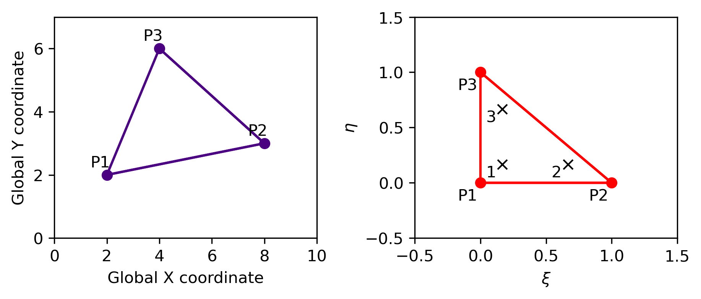

[1]:
import numpy as np
import matplotlib.pyplot as plt
import matplotlib as mpl
mpl.rcParams['figure.dpi']= 300
[63]:
# create input
X = np.array([2, 8, 4, 2])
Y = np.array([2, 3, 6, 2])
Xi = np.array([0, 1, 0, 0])
Eta = np.array([0, 0, 1, 0])
Xi_ip = np.array([1/6, 2/3, 1/6])
Eta_ip = np.array([1/6, 1/6, 2/3])
[71]:
# plottin
fig, f_axes = plt.subplots(ncols=2, nrows=1, constrained_layout=True, figsize=(6, 2.5))
f_axes[0].plot(X,Y, color="indigo")
f_axes[0].plot(X[0:-1],Y[0:-1], marker="o", color="indigo")
# zip joins x and y coordinates in pairs
Names = ["P1", "P2", "P3"]
for x,y,n in zip(X[:-1],Y[:-1],Names):
f_axes[0].annotate(n, # this is the text
(x,y), # this is the point to label
textcoords="offset points", # how to position the text
xytext=(-4,5), # distance from text to points (x,y)
ha='center') # horizontal alignment can be left, right or center
f_axes[0].set_xlim((0, 10))
f_axes[0].set_ylim((0, 7))
f_axes[0].set_xlabel('Global X coordinate')
f_axes[0].set_ylabel('Global Y coordinate')
f_axes[1].plot(Xi,Eta, color='red')
f_axes[1].plot(Xi[0:-1],Eta[0:-1], marker="o", color="red")
for x,y,n in zip(Xi[:-1],Eta[:-1],Names):
f_axes[1].annotate(n, # this is the text
(x,y), # this is the point to label
textcoords="offset points", # how to position the text
xytext=(-8,-11), # distance from text to points (x,y)
ha='center') # horizontal alignment can be left, right or center
# integration points
f_axes[1].plot(Xi_ip,Eta_ip, marker="x", linestyle = 'None', color="black")
Names = ["1", "2", "3"]
for x,y,n in zip(Xi_ip,Eta_ip,Names):
f_axes[1].annotate(n, # this is the text
(x,y), # this is the point to label
textcoords="offset points", # how to position the text
xytext=(-7,-8), # distance from text to points (x,y)
ha='center') # horizontal alignment can be left, right or center
f_axes[1].set_xlim((-0.5, 1.5))
f_axes[1].set_ylim((-0.5, 1.5))
f_axes[1].set_xlabel(r'$\xi$')
f_axes[1].set_ylabel(r'$\eta$')
plt.show()
fig.savefig('triangle_coords.png', dpi=300,facecolor="white", edgecolor='none')

[ ]:
[ ]: